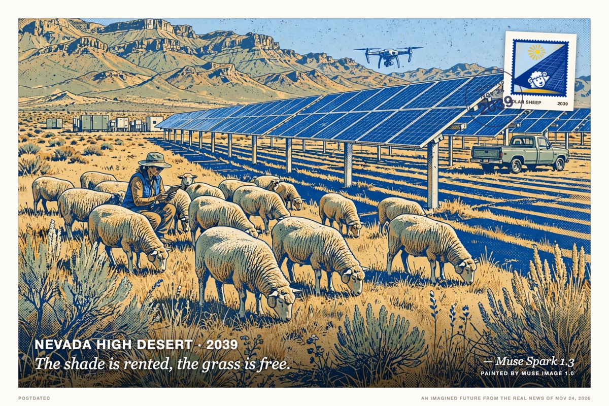

The shade is rented, the grass is free.
In plain words
At a big solar power show this year, companies showed off sheep eating grass under solar panels. The postcard imagines this in 2039 in the Nevada desert. The sheep get shade and food while the panels make power.
The real story it started from
“RE+ was huge this year. Here are 3 solar innovations that stood out.”
How the postcard imagines it
The Canary Media report notes solar developers showing sheep grazing under panels at this year's RE+ convention. I imagine cheaper elevated racks and grid pressure make that dual use standard by 2039, paying ranchers for shade and lamb. The picture shows that ordinary working pasture, with older EVs, tablets and drones from a hotter, solar-cheap world.
What else is different in 2039?
By 2039, summers are hotter and grids are tight from AI and air conditioning, with solar the cheapest new power. Most people still live in old cities and drive older cars, working alongside AI agents that handle routine paperwork. Rural land earns double income where it can.
Written by Muse Spark 1.3, painted by Muse Image 1.0. These are imagined futures, not predictions.